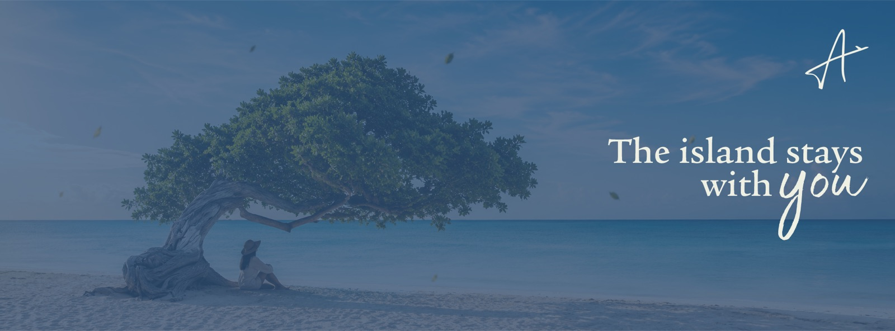

Experiencia
La llegada a la isla
Todo empieza en la ventanilla de un avión. Arrive Aruba convierte ese instante en el centro de su historia.
Video
Desde la ventanilla
Pulsa «reproducir» para ver la descripción de cada escena.
Audio
El sonido de la llegada
Historia
Tres momentos de la llegada
-
La ventanilla
El primer vistazo al mar turquesa desde el aire.
-
La isla
La luz, la arena y el ritmo tranquilo de los primeros días.
-
El regreso
Una prenda que conserva la sensación de la isla al volver a casa.

Un símbolo de la isla
Los alisios inclinan el divi-divi siempre en la misma dirección. Para Arrive Aruba representa la constancia de la isla: una referencia que se mantiene, viaje tras viaje.